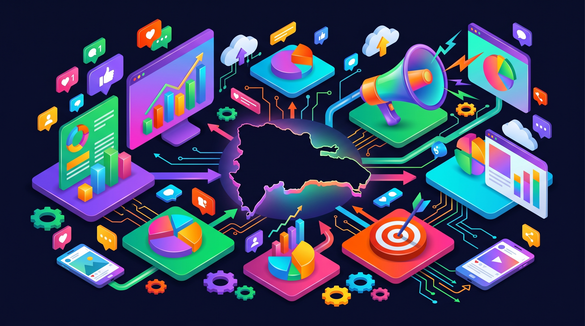
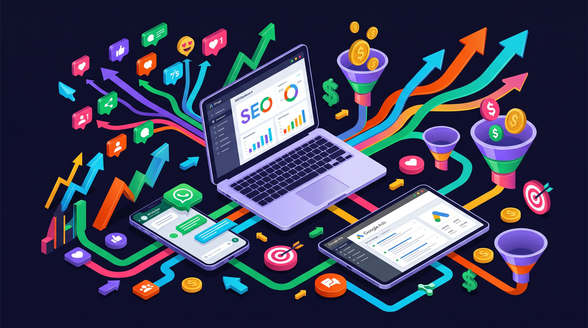

Si tienes un negocio en República Dominicana y no estás invirtiendo en marketing digital, estás dejando dinero sobre la mesa. No es una exageración. El 82% de los dominicanos tiene acceso a internet, 7 millones están en Facebook y el 78% usa WhatsApp todos los días. Tus clientes están ahí. La pregunta es si te van a encontrar a ti o a tu competencia.
Esta guía no es un resumen genérico de "qué es el marketing digital". Es una hoja de ruta práctica, diseñada específicamente para el mercado dominicano en 2026. Vamos a cubrir las estrategias que realmente generan resultados — con costos reales, herramientas concretas y ejemplos que puedes aplicar hoy.

Por Qué el Marketing Digital Es la Mejor Inversión para Negocios en RD
El marketing tradicional en República Dominicana — vallas publicitarias, anuncios de radio, flyers — sigue existiendo. Pero tiene un problema fundamental: no puedes medir lo que funciona. Pones un anuncio en una valla en la Churchill y no tienes idea de cuántas personas lo vieron, cuántas se interesaron y cuántas compraron.
El marketing digital resuelve ese problema. Cada peso que inviertes es rastreable. Sabes exactamente cuántas personas vieron tu anuncio, cuántas hicieron clic, cuántas dejaron sus datos y cuántas compraron. Esa transparencia cambia completamente cómo tomas decisiones de inversión.
Pero hay una ventaja adicional para el mercado dominicano: la competencia digital es baja. La mayoría de negocios en RD todavía dependen del boca a boca y de referidos. Los que sí hacen marketing digital, en su mayoría publican en Instagram sin estrategia y corren ads sin embudo. Eso crea una oportunidad enorme para cualquier negocio que decida hacer las cosas bien.
Piénsalo así: si tu competencia no tiene página web optimizada, no aparece en Google, no tiene un embudo de ventas y no automatiza el seguimiento de leads — tú solo necesitas hacer esas cuatro cosas para estar 10 pasos adelante. En mercados saturados como Estados Unidos eso es imposible. En RD es totalmente alcanzable.
Y no necesitas un presupuesto de multinacional. Un negocio local puede empezar con una inversión de RD$15,000 a RD$30,000 mensuales en publicidad pagada y ver resultados medibles en las primeras semanas. Más adelante desglosamos los costos exactos.
Las 6 Estrategias de Marketing Digital que Realmente Funcionan en RD
No todas las estrategias de marketing digital aplican igual en República Dominicana. Lo que funciona en Estados Unidos o Europa no siempre se traduce al comportamiento del consumidor dominicano. Aquí no compramos igual, no buscamos igual y no confiamos en las mismas cosas.
Después de trabajar con negocios locales en diferentes industrias, estas son las 6 estrategias que consistentemente generan resultados en el mercado dominicano:
Ecosistema de marketing digital completo
- SEO local y Google Business Profile: Aparecer cuando alguien busca tu servicio en Google. Es gratis (orgánico) y genera los leads de mayor intención de compra.
- Publicidad pagada (Meta Ads + Google Ads): Llegar a miles de personas segmentadas por ubicación, intereses y comportamiento. Resultados rápidos y escalables.
- Redes sociales con estrategia: No publicar por publicar — crear contenido que eduque, genere confianza y mueva a la acción. Instagram y TikTok dominan en RD.
- WhatsApp Business como canal de cierre: En RD el cierre de venta pasa por WhatsApp. Un catálogo bien armado, respuestas automáticas y seguimiento proactivo convierten consultas en ventas.
- Email marketing y CRM: Dar seguimiento automatizado a los leads que no compran de inmediato. El 80% de las ventas ocurren después del quinto contacto.
- Embudos de venta: Conectar todas las piezas en un sistema: el ad genera el clic, la landing captura el lead, el CRM da seguimiento y WhatsApp cierra la venta.
La clave no es usar todas a la vez. Es elegir las 2-3 que más impacto tengan para tu negocio específico y ejecutarlas bien antes de agregar más. Un restaurante en la Zona Colonial tiene necesidades diferentes a una clínica dental en Santiago o un e-commerce de moda.
AGENDA UNA CONSULTA GRATISSEO Local en RD: La Oportunidad que Nadie Está Aprovechando
Cuando alguien en Santo Domingo busca "dentista cerca de mí" o "agencia de marketing digital en RD" en Google, los primeros resultados se llevan más del 75% de los clics. Si tu negocio no aparece ahí, básicamente no existes para esa persona.
El SEO (Search Engine Optimization) es el proceso de posicionar tu página web en los primeros resultados de Google para las búsquedas que importan para tu negocio. Y en República Dominicana, la oportunidad es absurda.
¿Por qué? Porque casi nadie lo está haciendo bien. La mayoría de negocios en RD no tienen blog, no optimizan sus páginas para keywords relevantes, no hacen link building y muchos ni siquiera tienen su Google Business Profile reclamado. Eso significa que con un esfuerzo moderado y consistente, puedes posicionarte para keywords comerciales valiosas en 3 a 6 meses.
Checklist de SEO Local para negocios en RD
El SEO local tiene dos componentes principales: el "Map Pack" de Google (los 3 resultados con mapa que aparecen primero) y los resultados orgánicos debajo. Para el Map Pack, lo más importante es tu Google Business Profile — que esté completo, tenga fotos actualizadas, reseñas positivas y la categoría correcta.
Para los resultados orgánicos, necesitas una página web con contenido optimizado. Eso significa páginas de servicio que incluyan las keywords que tu cliente potencial busca, un blog con artículos extensos y útiles (como este que estás leyendo), y una estructura técnica que Google pueda leer fácilmente.
El SEO es una inversión a largo plazo. No vas a ver resultados en la primera semana. Pero a diferencia de los ads pagados, cada artículo y cada página que publicas sigue generando tráfico gratis durante años. Es la estrategia con el mejor ROI a largo plazo para cualquier negocio en RD.

Publicidad Pagada: Google Ads vs Meta Ads en República Dominicana
Si el SEO es el juego a largo plazo, la publicidad pagada es el acelerador. Con Google Ads y Meta Ads, puedes poner tu negocio frente a miles de personas en cuestión de horas. Pero no son lo mismo, y elegir mal puede desperdiciar tu presupuesto.
Google Ads vs Meta Ads: ¿cuál elegir?
Google Ads funciona mejor cuando tu cliente potencial ya sabe que tiene un problema y está buscando la solución. "Agencia de marketing digital santo domingo", "reparación de aire acondicionado piantini", "abogado de inmigración RD" — esas son búsquedas de alta intención. El usuario quiere contratar ahora. Si tu anuncio aparece primero con una landing page convincente, tienes una probabilidad alta de convertir.
El costo por clic en Google Ads varía mucho según la industria. En RD, keywords comerciales pueden costar entre RD$15 y RD$80 por clic. Eso significa que con un presupuesto de RD$15,000/mes puedes conseguir entre 200 y 1,000 clics, dependiendo de tu nicho. Si tu tasa de conversión es del 5%, eso son 10 a 50 leads al mes.
Meta Ads (Facebook e Instagram) funciona diferente. Aquí no estás capturando demanda — estás creándola. Tu anuncio aparece en el feed de personas que encajan con tu perfil de cliente ideal, aunque no estén buscando tu servicio en ese momento. Es interrumpir con una propuesta tan relevante que la persona hace clic.
La ventaja de Meta en RD es el volumen. Con 7 millones de dominicanos en Facebook y una penetración de Instagram que crece cada trimestre, puedes llegar a tu audiencia completa con presupuestos relativamente bajos. Un anuncio bien hecho puede generar miles de impresiones por día con RD$500-1,000 de inversión diaria. Mira cómo lo hicimos para una clínica dental en RD.
Lo que no puedes hacer en ninguna plataforma es correr anuncios sin un embudo detrás. El ad es solo el primer paso. Necesitas una landing page que convierta, un CRM que capture y organice los leads, y un proceso de seguimiento (idealmente automatizado) que convierta esos leads en clientes. Sin eso, estás tirando dinero.
WhatsApp y Redes Sociales: El Canal de Ventas Más Subestimado
En República Dominicana, WhatsApp no es solo una app de mensajería — es la infraestructura de comunicación del país. El 78% de los dominicanos con smartphone usa WhatsApp diariamente. Tus clientes están ahí. Y si no estás usando WhatsApp Business como canal de ventas, estás perdiendo oportunidades todos los días.
WhatsApp Business (la versión para negocios, que es gratuita) te permite crear un catálogo de productos, configurar respuestas automáticas, etiquetar conversaciones por etapa y enviar mensajes masivos a listas de difusión. Es un mini-CRM que ya está en el teléfono de tu cliente.
Pero la clave no es solo tener WhatsApp Business — es integrarlo a tu embudo de marketing. Así funciona el flujo completo:
- El cliente ve tu anuncio en Instagram o Google
- Hace clic y llega a tu landing page
- Deja sus datos (nombre, teléfono, qué necesita)
- Tu CRM le envía un mensaje automático de WhatsApp en menos de 5 minutos
- El equipo de ventas da seguimiento personalizado por WhatsApp
- Se cierra la venta por WhatsApp o agenda una cita
Ese flujo — del ad al WhatsApp en menos de 5 minutos — es lo que separa a los negocios que convierten de los que pierden leads. Estudios muestran que responder en los primeros 5 minutos multiplica por 10 la probabilidad de conversión versus responder una hora después.
En cuanto a redes sociales, Instagram y TikTok son las plataformas dominantes en RD para contenido orgánico. Pero publicar sin estrategia es perder tiempo. El contenido que funciona en RD sigue estos principios:
- Educa primero, vende después: Los posts que enseñan algo útil generan más engagement y confianza que los que solo promocionan
- Video corto es rey: Reels de 30-60 segundos con tips, behind-the-scenes o resultados de clientes. TikTok y Reels tienen el mayor alcance orgánico
- Consistencia sobre perfección: Publicar 4-5 veces por semana con calidad decente supera a publicar una vez al mes con producción cinematográfica
- CTA en cada post: Siempre dile a la persona qué hacer: "envíame un DM", "link en bio", "comenta X si quieres saber más"
Las redes sociales solas no van a construir tu negocio. Pero combinadas con ads pagados y un embudo que capture leads, se convierten en una máquina de generación de confianza y autoridad que alimenta todo lo demás.
Cuánto Cuesta el Marketing Digital en RD y Qué Resultados Esperar
Esta es la pregunta que todo dueño de negocio hace primero. Y tiene todo el sentido — necesitas saber si el retorno justifica la inversión antes de comprometer tu presupuesto. Vamos a ser directos con los números.
Inversión mensual vs resultados esperados
Estos números son la inversión en publicidad pagada — el presupuesto que va directo a Google y Meta. Aparte está el fee de la agencia o freelancer que gestiona las campañas, que en RD típicamente va de US$300 a US$2,000/mes dependiendo del alcance del servicio.
¿Vale la pena? Hagamos la matemática simple. Si inviertes RD$30,000/mes en ads y generas 100 leads, de los cuales conviertes el 5% en clientes, tienes 5 clientes nuevos al mes. Si tu ticket promedio es RD$10,000, generaste RD$50,000 en ventas con una inversión de RD$30,000. Eso es un retorno de 1.67x — y eso sin contar que muchos de esos clientes comprarán más de una vez.
Los tiempos de retorno varían según la estrategia. Con ads pagados puedes ver resultados en las primeras 1-2 semanas — el tráfico es inmediato. Con SEO, espera de 3 a 6 meses para que tu contenido empiece a posicionar, pero una vez que lo hace, el tráfico es gratuito y compuesto (cada artículo nuevo refuerza la autoridad de los anteriores).
El error más común que vemos en negocios dominicanos es invertir solo en el medio del embudo (ads) sin tener el fondo (landing page, CRM, seguimiento) resuelto. Generas 100 leads y pierdes 90 porque nadie les da seguimiento en las primeras horas. Antes de aumentar el presupuesto de ads, asegúrate de que tu proceso de conversión está optimizado.
Marketing Digital en RD: FAQs
Conclusión
El marketing digital en República Dominicana no es el futuro — es el presente. Pero la ventana de oportunidad para posicionarte como líder en tu nicho no va a estar abierta para siempre. A medida que más negocios dominicanos adopten estrategias digitales, la competencia va a subir y los costos con ella.
Si estás leyendo esto, ya tienes una ventaja. Sabes que necesitas SEO, que los ads pagados funcionan mejor con un embudo detrás, que WhatsApp es tu canal de cierre, y que todo debe ser medible. El siguiente paso es ejecutar.
No necesitas implementar todo de una vez. Empieza con una estrategia, ejecútala bien, mide los resultados y escala lo que funciona. Si necesitas ayuda para armar tu embudo de marketing digital completo — desde la landing page hasta la automatización del seguimiento — agenda una consulta gratis.

0 Comentarios